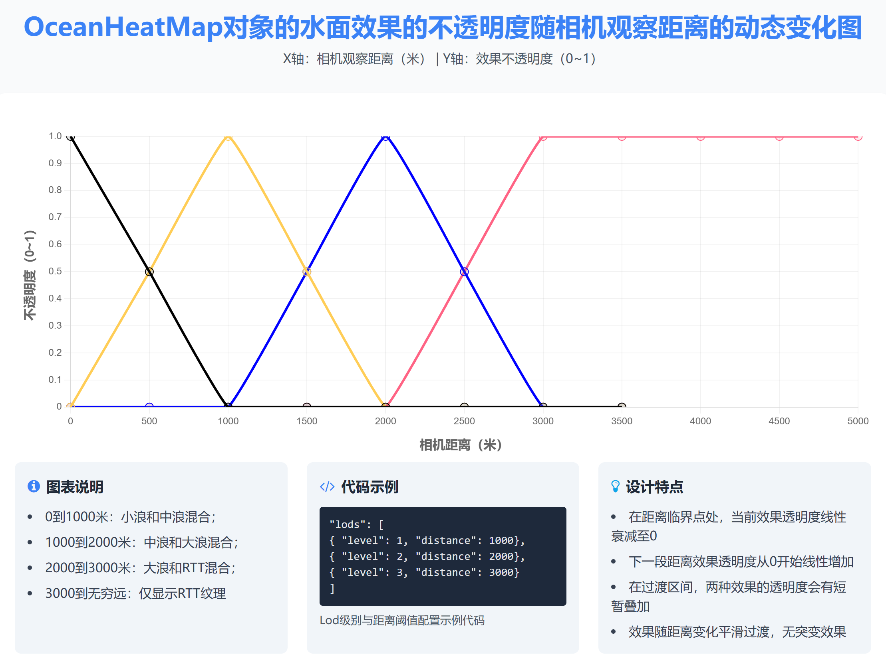

<protected> new OceanHeatMap()
- See:
-
- DigitalTwinAPI#OceanHeatMap
Methods
-
add(data, fn)
-
添加一个或多个OceanHeatMap海洋热力图对象，数据源为.tif文件。
Parameters:
Name Type Description dataobject | array 构造海洋热力图对象OceanHeatMap的数据对象，可以是Object类型或者Array类型，对于每一个OceanHeatMap对象，支持以下属性：
-
id (string) OceanHeatMap对象ID
-
groupId (string) 可选，Group分组
-
userData (string) 可选，用户自定义数据
-
offset (array) 可选，海洋热力图的整体偏移，默认值：[0, 0, 0]
-
collision (boolean) 是否开启模型碰撞，默认：false，注意：开启后会影响加载效率
-
displayMode (
OceanHeatMapStyle) 海洋热力图的显示样式枚举，支持箭头、流场和海浪三种显示样式，取值详情参考OceanHeatMapStyle -
alphaMode (number) 透明模式，取值：[0,1]，0 : 使用colors调色板的不透明度值 1 : 使用tif数据包含的水深字段自动控制不透明度，默认值：1
-
valueFile (string) 必选，海洋热力图tif数据文件路径（水深文件tif），取值示例："C:/tifFile/value.tif"，注意：水深和流速这2个tif文件分辨率必须保持一致
-
flowField (string) 必选，海洋热力图tif数据文件路径（流速流向uv文件tif），取值示例："C:/tifFile/uv.tif"，注意：水深和流速这2个tif文件分辨率必须保持一致
-
valueRange (array) 可选，水深对应的数值区间，如果不传则系统会自动计算并使用valueFile数据的水深范围
-
speedRange (array) 可选，流速范围，如果不传则系统会自动计算并使用flowField数据的速度范围
-
alphaGradientValueRange (array) 边缘羽化的水深范围，默认值：[0,2]，单位：米，对应的alpha区间为[0,1]，注意：仅在alphaMode=1时生效
-
rippleDensity (number) 可选，水波纹辐射强度，默认值：1
-
rippleTiling (number) 可选，水波纹辐射平铺系数，默认值：1
-
speedFactor (number) 可选，速度因子，控制水波纹或者粒子的速度，默认值：1
-
foamIntensity (number) 可选，水泡沫的强度，默认值：1
-
waveBrightness (number) 可选，水波纹的显示亮度，取值范围：[0~1000]，值越大亮度越高水波纹越明显，默认值：1
-
shadowDensity (number) 可选，水波纹阴影强度，默认值：1
-
arrowColor (array) 箭头的颜色和透明度，示例值：[1,1,1,0.5]
-
arrowDisplayMode (number) 箭头的显示模式，取值范围：[0,1]，0默认样式（受arrowColor参数影响），1热力样式（受arrowColors调色板参数影响），默认值：0
-
arrowAlphaMode (number) 箭头透明度模式，仅在arrowDisplayMode=0时生效，取值：[0,1]，0使用arrowColor的透明度，1使用调色板的透明度，默认值：0
-
particles (object) 可选参数，粒子动态效果对应参数的配置对象
displayMode (number) 可选，粒子的的显示模式，取值范围：[0,1]，0默认样式（受arrowColor参数影响），1热力样式（受arrowColors调色板参数影响），默认值：0
alphaMode (number) 可选，粒子的透明度模式，仅在displayMode=0时生效，取值：[0,1]，0使用arrowColor的透明度，1使用调色板的透明度，默认值：0
color (array) 可选，粒子的颜色和透明度，示例值：[1,1,1,0.5]
num (number) 可选，箭头数量
speedFactor (number) 可选，速度因子
sizeScale (number) 可选，尺寸缩放因子
fadeOpacity (number) 可选，不透明度渐隐系数
baseRespawnRate (number) 可选，重新生成箭头的基础因子
respawnSpeedFactor(number) 可选，重新生成箭头的速度因子
-
flowVisualization (object) 可选参数，流场可视化效果配置参数对象
brightness (number) 可选，亮度
noisePuls (number) 可选，脉冲噪声
timeSpeed (number) 可选，时间加速因子
tilling (number) 可选，平铺因子
blendFactor (number) 可选，混合因子
renderSpeedRange(array) 可选，流速渲染范围
-
lods (array) 可选参数，流场样式下，流场、远景水波纹、近景水波纹、水面浪花的四个显示距离：

level (number) 四种显示类型
distance (number) 透明度开始衰变的相机距离
-
colors (object) 海洋热力图自定义调色板对象，包含颜色渐变控制、无效像素颜色和调色板区间数组
gradient (boolean) 是否渐变
invalidColor (Color) 无效像素点的默认颜色，默认白色
colorStops (array) 调色板对象数组，每一个对象包含热力值和对应颜色值，结构示例：[{"value":0, "color":[0,0,1,1]}]，每一个调色板对象支持以下属性：
color (Color) 值对应的调色板颜色，注意alphaMode=0时，此颜色值的透明度生效
value (number) 值
fnfunction 可选的回调函数，请参考二次开发：异步接口调用方式
Example
请求数据结构示例 { "id": "oceanHeatmap1", "offset": [0, 0, 0], "collision": true, "alphaMode": 1, "displayMode": 1, "valueRange":[0,0.3], "speedRange":[0,0.3], "alphaGradientValueRange": [0, 0.3], "speedFactor": 500, "rippleDensity": 1, "rippleTiling": 1, "foamIntensity": 3, "waveBrightness": 10, "shadowIntensity": 1, "particles": { "alphaMode": 0, "color": [0, 0, 0, 1], "displayMode": 0, "num": 10000, "speedFactor": 5000, "sizeScale": 0.01, "fadeOpacity": 0.95, "baseRespawnRate": 0.03, "respawnSpeedFactor": 0.02 }, "lods": [ { "level": 1, "distance": 50000, }, { "level": 2, "distance": 100000, }, { "level": 3, "distance": 500000, } ], "flowVisualization": { "brightness": 1.0, "noisePuls": 0.5, "timeSpeed": 0.75, "tilling": 0.5, "blendFactor": 0.5, "renderSpeedRange": [0, 0] }, "valueFile": path + "/assets/tif/oceanheatmap/value.tif", "flowField": path + "/assets/tif/oceanheatmap/uv.tif", "colors": { "gradient": true, "invalidColor": [0, 0, 0, 1], "colorStops": [{ "value": 0, "color": [0.2, 0.4, 0.92, 0] }, { "value": 0.2, "color": [0.1, 0.85, 0.85, 1] }, { "value": 0.3, "color": [0.05, 0.9, 0.05, 1] }, { "value": 0.5, "color": [0.8, 0.8, 0.01, 1] }, { "value": 1, "color": [1, 0.15, 0.15, 1] }] } } -
-
clear(fn)
-
删除场景中所有的OceanHeatMap
Parameters:
Name Type Description fnfunction 可选的回调函数，请参考二次开发：异步接口调用方式
-
delete(ids, fn)
-
删除一个或多个OceanHeatMap对象
Parameters:
Name Type Description idsstring | array 要删除的OceanHeatMap对象的ID或者ID数组（可以删除一个或者多个）
fnfunction 可选的回调函数，请参考二次开发：异步接口调用方式
-
focus(ids, distance, flyTime, rotation, fn)
-
自动定位到合适的观察距离
Parameters:
Name Type Description idsstring | array OceanHeatMap对象的ID或者ID数组
distancenumber 可选参数，观察点距离目标点（被拍摄物体）的距离，取值范围：[0.01~任意正数]，如果设置为0或者不设置，系统自动计算
flyTimenumber 可选参数，相机飞行的时间，取值范围：[0~任意正数]，单位：秒，默认值2秒
rotationarray 可选参数，相机旋转的欧拉角：[Pitch,Yaw,Roll]，数组元素类型：(number)，取值范围：Pitch[-90~90] Yaw[-180~180] Roll[0]
fnfunction 可选的回调函数，请参考二次开发：异步接口调用方式
-
get(ids, fn)
-
根据ID获取OceanHeatMap的详细信息
Parameters:
Name Type Description idsstring | array 要获取的OceanHeatMap对象ID或者ID数组（可以获取一个或者多个）
fnfunction 可选的回调函数，请参考二次开发：异步接口调用方式
-
hide(ids, fn)
-
隐藏OceanHeatMap
Parameters:
Name Type Description idsstring | array OceanHeatMap对象的ID或者ID数组
fnfunction 可选的回调函数，请参考二次开发：异步接口调用方式
-
show(ids, fn)
-
显示OceanHeatMap
Parameters:
Name Type Description idsstring | array OceanHeatMap对象的ID或者ID数组
fnfunction 可选的回调函数，请参考二次开发：异步接口调用方式
-
update(data, fn)
-
修改一个或多个OceanHeatMap对象
Parameters:
Name Type Description dataobject | array OceanHeatMap对象或者数组，以下属性支持更新
-
id (string) 根据OceanHeatMap对象的ID更新以下属性
-
valueFile (string) 必选，海洋热力图tif数据文件路径（水深文件tif），取值示例："C:/tifFile/xxx1.tif"，注意：waterDepth、flowField和dem的三个tif文件分辨率必须保持一致
-
flowField (string) 必选，海洋热力图tif数据文件路径（流速流向文件tif），取值示例："C:/tifFile/xxx2.tif"，注意：waterDepth、flowField和dem的三个tif文件分辨率必须保持一致
fnfunction 可选的回调函数，请参考二次开发：异步接口调用方式
-